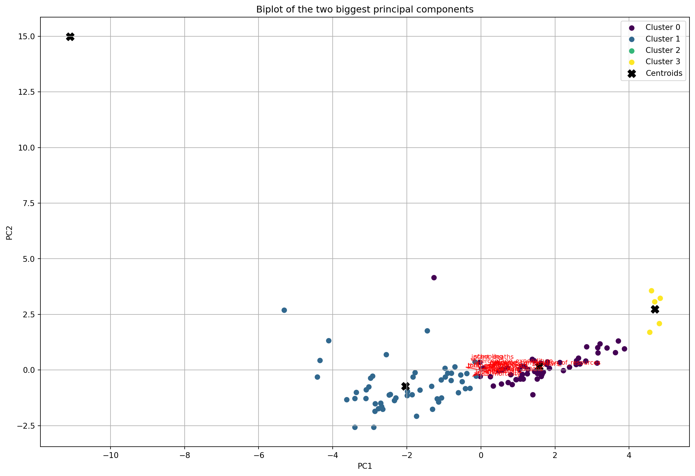

## | label: clustering-imports
#| fig-cap: "A line plot on a polar axis"
#| include: false
from IPython.display import display, Math, Latex
from scipy.cluster.hierarchy import dendrogram, linkage, fcluster
from sklearn.cluster import KMeans
from sklearn.decomposition import PCA
from sklearn.metrics import silhouette_samples, silhouette_score
from sklearn.preprocessing import StandardScaler
import matplotlib.pyplot as plt
import numpy as np
import pandas as pd
import seaborn as sns
import ama_tlbx.plotting as plotting
import ama_tlbx.data as data
import ama_tlbx.analysis as analysisClustering
1 Clustering
dataset = data.LifeExpectancyDataset.from_csv(csv_path="../../_data/life_expectancy_data.csv")
df = dataset.df_standardized
print(df)
kmeans_4 = KMeans(n_clusters=4, n_init=25)
print(type(df))
kmeans_4.fit(df)
pca = PCA(n_components=2) # 2-D visualization
pca_fit = pca.fit_transform(df)
# Create a DataFrame for PCA results (i.e. score-vector of datapoints w.r.t principal components)
pca_df = pd.DataFrame(pca_fit, columns=['PC1', 'PC2'], index=df.index)
pca_df['Cluster_4means'] = kmeans_4.labels_
# Biplot Visualization
plt.figure(figsize=(15, 10))
# Plot datapoints with different colors for different clusters
clusters = np.unique(pca_df['Cluster_4means'])
colors = plt.get_cmap('viridis', len(clusters))
for cluster in clusters:
cluster_data = pca_df[pca_df['Cluster_4means'] == cluster]
plt.scatter(cluster_data['PC1'], cluster_data['PC2'], color=colors(cluster), label=f'Cluster {cluster}')
# Plot cluster centroids
centroids = pd.DataFrame(kmeans_4.cluster_centers_, columns=df.columns)
centroids_pca=pca.transform(centroids)
plt.scatter(centroids_pca[:, 0], centroids_pca[:, 1], s=100, c='black', marker='X', label='Centroids')
# Plot arrows for principal components
for i, var in enumerate(dataset.feature_columns()):
plt.arrow(0, 0, pca.components_[0, i], pca.components_[1, i], color='r', alpha=0.5, head_width=0.05, head_length=0.1)
plt.text(pca.components_[0, i] * 1.15, pca.components_[1, i] * 1.15, var, color='r', fontsize=8)
plt.xlabel('PC1')
plt.ylabel('PC2')
plt.title('Biplot of the two biggest principal components')
plt.grid(True)
plt.legend()
plt.show() adult_mortality alcohol bmi diphtheria gdp \
country
Afghanistan 1.059807 -1.198332 -1.010669 -1.141593 -0.458457
Albania -1.207668 0.159330 0.790938 0.646137 -0.459231
Algeria -0.256280 -1.095775 -1.474644 0.492903 -0.046028
Angola 1.694065 0.347351 -0.832976 -0.630813 -0.168223
Argentina -0.256280 0.789324 1.101901 0.288591 0.330899
... ... ... ... ... ...
Uruguay -0.295921 0.425490 1.175939 0.441825 -0.492019
Uzbekistan 0.179773 -0.678220 0.149270 0.543981 -0.491582
Vanuatu -0.034290 -0.956590 0.539207 -0.937281 -0.224380
Zambia 2.582028 -0.695313 -0.813232 -3.950883 -0.487983
Zimbabwe -0.747831 -0.255783 -0.369000 -0.630813 -0.455314
hepatitis_b hiv_aids income_composition_of_resources \
country
Afghanistan -0.717680 -0.359632 -1.246312
Albania 0.703469 -0.359632 0.437064
Algeria -2.910311 -0.359632 0.361078
Angola -0.311638 0.046426 -1.018355
Argentina 0.175613 -0.359632 0.933894
... ... ... ...
Uruguay 0.541052 -0.359632 0.770232
Uzbekistan 0.744073 -0.327147 0.016220
Vanuatu -3.032124 -0.359632 -0.287723
Zambia -2.950915 1.833079 -0.796243
Zimbabwe -0.352242 3.473552 -1.252157
infant_deaths life_expectancy measles percentage_expenditure \
country
Afghanistan 0.303532 -1.209762 -0.052904 -0.394466
Albania -0.264058 0.782299 -0.157708 -0.378609
Algeria -0.130919 0.554944 -0.159769 -0.164506
Angola 0.338569 -2.216620 -0.064799 -0.265213
Argentina -0.200992 0.663209 -0.159769 0.419166
... ... ... ... ...
Uruguay -0.264058 0.728167 -0.159769 -0.391818
Uzbekistan -0.116905 -0.094641 -0.078941 -0.395670
Vanuatu -0.271065 0.468333 -0.159769 -0.148031
Zambia -0.046832 -1.740257 -0.109661 -0.394510
Zimbabwe -0.067854 -2.389843 -0.137103 -0.380416
polio population schooling thinness_1_19_years \
country
Afghanistan -1.134227 0.049053 -1.226165 2.942695
Albania 0.721078 -0.192173 -0.086099 -0.758942
Algeria 0.514933 -0.192131 0.163291 0.177104
Angola -0.515792 -0.165245 -1.475555 0.942960
Argentina 0.360324 -0.156176 1.588374 -0.865311
... ... ... ... ...
Uruguay 0.463397 -0.162141 1.232103 -0.758942
Uzbekistan 0.669542 -0.192199 -0.014845 -0.439835
Vanuatu -0.928082 -0.190447 -0.406742 -0.758942
Zambia -0.412719 -0.076979 -0.264234 0.368568
Zimbabwe -0.618864 -0.180349 -0.798640 0.645127
thinness_5_9_years total_expenditure under_five_deaths
country
Afghanistan 2.886683 0.496767 0.301612
Albania -0.722103 0.206919 -0.267803
Algeria 0.148983 -0.842054 -0.155954
Angola 0.916369 -1.044487 0.428713
Argentina -0.888024 0.386349 -0.211878
... ... ... ...
Uruguay -0.763583 1.186880 -0.267803
Uzbekistan -0.431741 0.073497 -0.140701
Vanuatu -0.763583 -0.911065 -0.272887
Zambia 0.335645 -0.589012 -0.013600
Zimbabwe 0.626007 -0.543004 -0.039020
[120 rows x 19 columns]
<class 'pandas.core.frame.DataFrame'>
